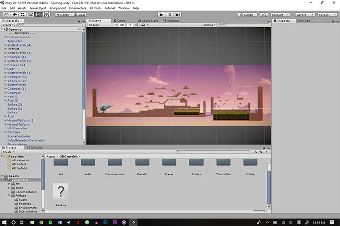

My Works
Transmissions, Video, 2018
My life is romanticized by the music in my ears as I walk the city streets. Everything hits a beat and these are the music transmissions that infiltrate my sleep.

Memory, Glitch Art, 2018
There's something really unsettling about destroying images that mean a lot to us. This picture is full of so many emotions that I wanted to pick it apart to its bare essentials, take away the color, or specific colors. Just break it down into something unlike it was before.


Cosmo Covers , Phototshop, 2018
For this project I took my best freind Mikayla's pictures of her makeup looks and turn them into this jab at the beauty industry as well as the conventional standards f beauty. The diffrent headlines are exxagerated versions of the real article headlines that Cosmo often publishes.
Waters of Old, Google Earth Composite, 2018
This peice is a collection of lakes and rivers across the US in diffrent areas. I was fascinated by the differnces in the color of the water per the area I pulled them from and I put them on a neutral blue background to enhance the diffrences in color.
Free the Bees, Phototshop Composite, 2019
In this project I found and recolored a Bee and made a collage out of that bee in the shape of every contitinent. This symbolizes the need on that out would has for bees. Without them we would cease to exist in just a few days. They pollinate our food, they even pollineate the trees we need to breathe oxygen. They are essential to our survival and should not be ignored.
Everything Changes, And I'll Be Ok , Video, 2018
This work speaks to my feelings since moving from my hometown in Kingsburg, CA to the giant city of San Jose, CA for college. It's been a bit of a struggle but I have a strong support system and I know that I'll be ok. Eventually.
Big Bubble Array, Javascript Processing, 2019
This is my favorite peice I've made in Processing. The bouncing ellipse arrays make this repeating beautiful rainbow pattern of a diamond as they bounce behind the bigger bubbles on the outside of the frame.
The Relaxation Zone, Net Art, 2018
https://ashleymlinder.github.io/netart/
This peice is my first exploration into the world of code with HTML and CSS. The Relaxation Zone is a get away from the stresses of life and into a place of relaxation with visuals, sound and ASMR media. Sit back, and relax!
Sounds of Home , Audacity Sound Art, 2018
This peice is about my home back in Kingsburg, CA. It's my idealized comfort place. I layered the sounds of: thunder and lightning to remember the times spent in the rain, my senior recital in highschool playing Clair De Lune on flute, my dog as a puppy barking, and the sound of my playstation turning on and myself playing Spider-Man.

Level Design 101, Unity Engine, 2018
This was my first dive into the world of making games! It's still a work in progress but this has always been a dream career of mine and its been fun to explore the inside of what it entails to make a game.